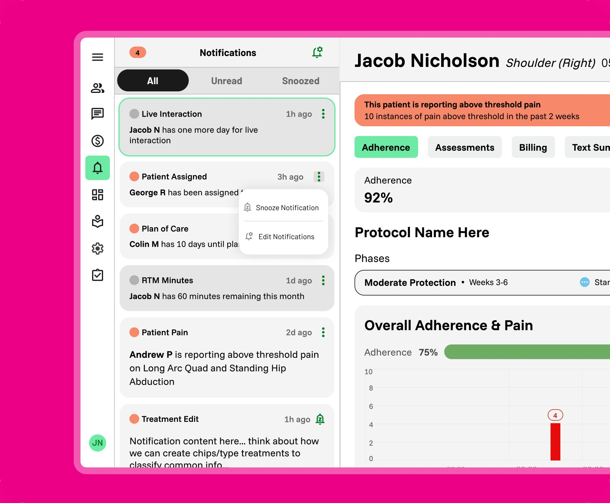
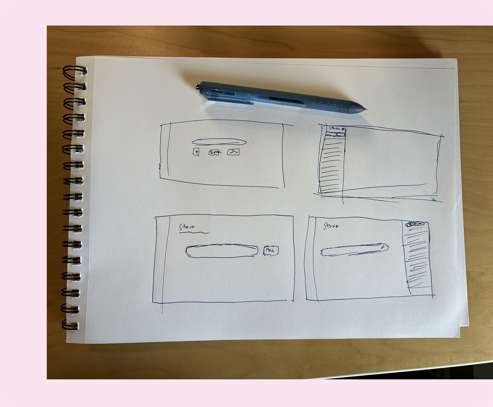
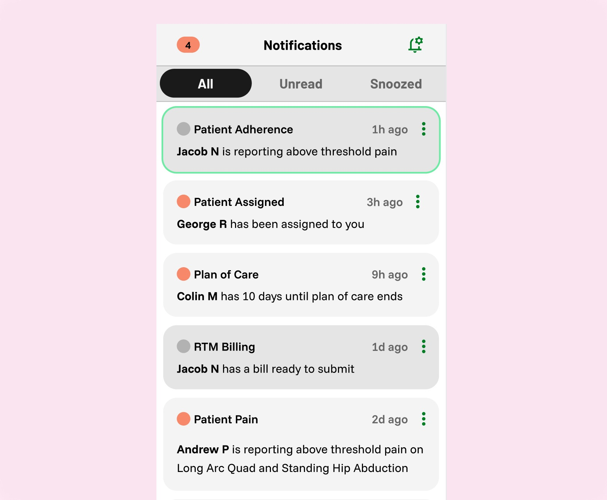
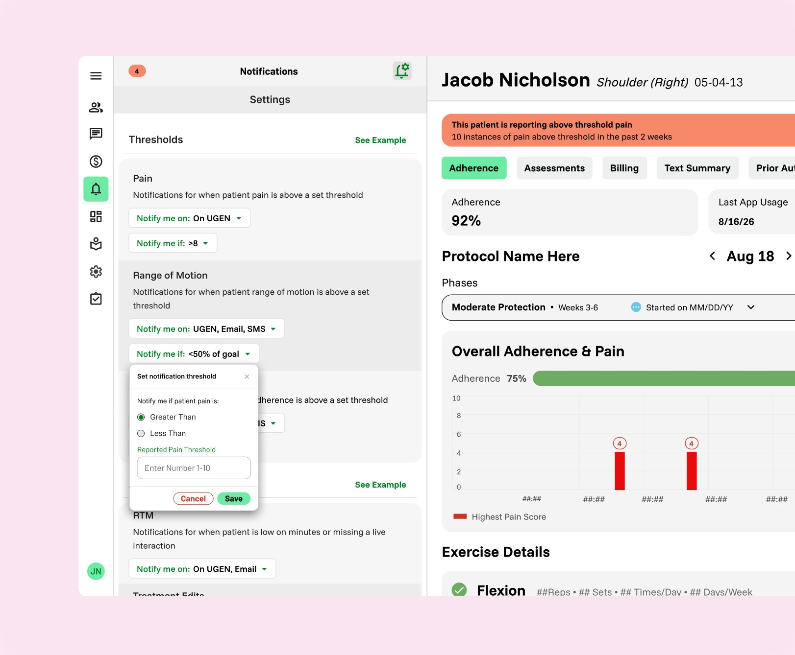
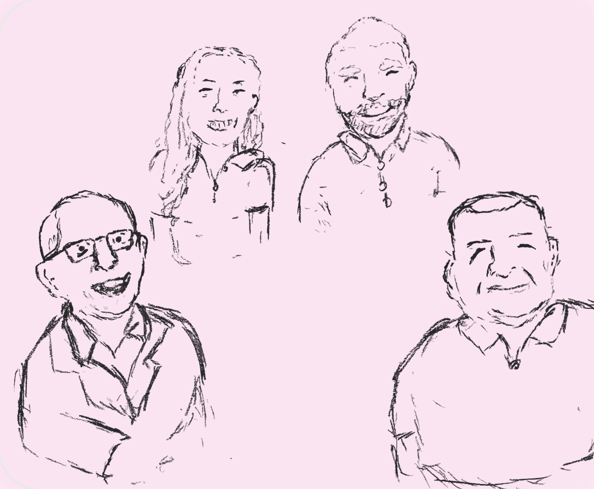

UGen Health Inc
2026Product Design Lead2 months
The Care Team Portal is the provider-side companion to the patient app, and provides the ability to manage patients, prescribe exercises and monitor performance. At scale, a provider could be dealing with hundreds of patients at a time, and we have the opportunity to help direct their attention to what needs it the most.

In the early stages of design, I advocated for a solution that integrates into our existing workflows rather than building a separate tool for managing certain alerts. Once aligned with my team, I began working to build something that would vastly improve the way patient data is communicated on UGen.

Starting with a new component instead of a new page, I built a container that could attach to the existing navigation, substituting it and allowing the user to be directed to the related page of each notification, quickly accomplishing tasks.

Instead of offloading the complex and granular settings to its own page, the user can make quick changes inside of the component, allowing them to set the platform and the global thresholds they would like to be notified on, with precise control for each user.

As this was a heavily anticipated feature, I was excited to be able to run it past a few experts in the field. After three awesome conversations, including with a surgeon at a major hospital, a director of PT and their PTA at a partner institution, and a local small practice owner, we were able to get a much better grasp of what was valuable to each member of a care team, curate our notification categories, and affirm a lot of our design decisions.
In the end, our team built a solution that transformed the speed at which work is conducted on our platform, and enabled the possibility for much-needed and deeply customizable notifiers, making sure each patient on our platform is getting the care they deserve.